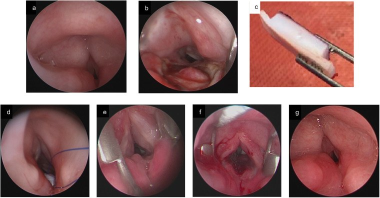
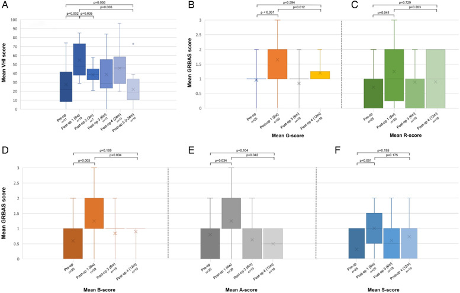
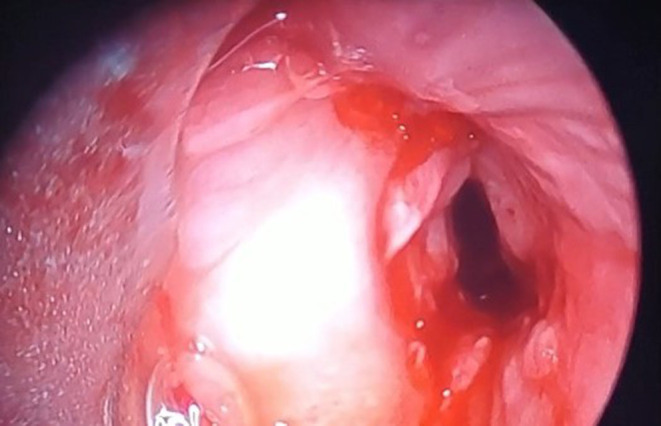
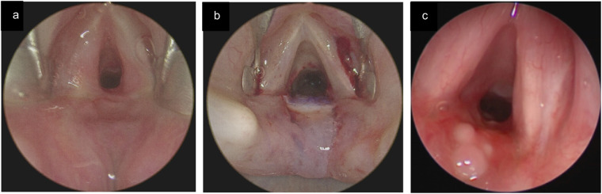

3049 — Hẹp thanh–khí quản TÁI PHÁT sau tạo hình/cắt nối ở trẻ: mô hạt hay sẹo, khi nào nong lại – đặt stent – mổ lại
Tags: pattern:hep-duong-tho pattern:hep-tai-phat pattern:mo-hat vung:duong-tho vung:thanh-quan vung:khi-quan anatomy:thanh-quan score:Myer-Cotton protocol:noi-soi-ong-mem protocol:CT-lat-mong protocol:nong-bong protocol:stent-duong-tho
Mức chắc chắn (certainty): tổng hợp y văn (literature synthesis) — ghép 44 trẻ mổ mở đường thở 10 năm (Eur Arch Otorhinolaryngol 2026, PMC13249641), tổng quan chiến lược phẫu thuật 2025 có ảnh nội soi tái hẹp/mô hạt (Front Pediatr 2025, PMC12417507), 37 ca cắt sụn nhận–khí quản + kết cục giọng (Front Surg 2025, PMC11865094), meta-analysis LTR vs PCTR (Laryngoscope Investig Otolaryngol 2025, PMC12267102), ca 10 tuổi tái hẹp + stent Montgomery (Int Med Case Rep J 2026, PMC13200192) và 46 trẻ đặt LT-Mold (J Laryngol Otol 2025, PMC12571591). Không có ca do nhóm tự chụp.
Câu hỏi thực hành: bé trai 2 tuổi, hẹp dưới thanh môn độ III sau đặt nội khí quản, đã tạo hình thanh–khí quản một thì. Sáu tuần sau mổ trẻ rít lại, giọng khàn nặng; nội soi thấy vòng mô đỏ quanh miệng nối. Câu hỏi: đây là mô hạt hay sẹo thật, có phải mổ lại không, và vì sao không được gọi “thất bại” quá sớm? Bài chốt ba quyết định: (1) tái hẹp là biến cố thường gặp, không phải biến chứng hiếm — mô hạt quanh miệng nối 40,5%, tái hẹp sẹo dài hạn 5,4% sau PCTR, 51,6–59,2% ở một số loạt nong bóng; (2) phân biệt “mô hạt còn non” (nội soi + nong/laser/steroid/MMC) với “sẹo xơ co kéo” (mổ lại) bằng tuổi sẹo, không bằng cảm giác; (3) đánh giá thành công bằng cả rút ống, giọng nói và nuốt — VHI tăng gấp đôi ở tháng đầu dù khí quản đã thông. Nối 3047 – Hẹp khí quản sau đặt nội khí quản, 3005 – U máu dưới thanh môn, 612 – Cấp cứu đường thở trên ở trẻ, 602 – Khí phế quản mềm.
1. Tổng quan bệnh học – cơ chế hình ảnh: vì sao miệng nối lại hẹp
- Vị trí “nóng” nhất là miệng nối, không phải chỗ hẹp cũ. Sau tạo hình thanh–khí quản (laryngotracheoplasty, LTP) hoặc cắt nối sụn nhận–khí quản (partial cricotracheal resection, PCTR), ba nơi dễ hẹp lại: đường khâu miệng nối, diện ghép sụn (nếu thiếu niêm mạc phủ) và lỗ mở khí quản/thượng lỗ ở trẻ còn cannula. Trong loạt 37 ca PCTR, biến chứng hay gặp nhất không phải hẹp mà là màng fibrin/mô hạt tại miệng nối: 40,5% (15/37); tái hẹp thật chỉ 5,4% (2/37) và cả hai đều xử lý được bằng nội soi (PMC11865094). Ngược lại, các loạt nong bóng nội soi lặp lại ghi tái hẹp 51,6–59,2% (PMC13116667, đã dẫn ở bài 3047) — con số khác nhau vì “tái hẹp” được định nghĩa khác nhau, không phải vì bệnh khác nhau.
- TẠI SAO mô hạt xuất hiện rồi thành sẹo: miệng nối là vết thương xuyên toàn bộ thành (niêm mạc → sụn → mô quanh khí quản). Quá trình lành qua 3 pha: viêm (0–7 ngày) → tăng sinh mô hạt (tuần 1–6) → tái tạo/xơ hóa (tuần 6 đến nhiều tháng). Mô hạt là mạch máu non, giàu nguyên bào sợi, phù nề, nên trên nội soi đỏ, mềm, dễ chảy máu; khi trưởng thành, nguyên bào sợi biến thành nguyên bào cơ sợi (myofibroblast) và tiết collagen type I → dải xơ trắng, co kéo, không co giãn. Đây là lý do cùng một “vòng hẹp” nhưng tuổi khác nhau thì điều trị khác nhau: mô hạt đáp ứng nong/laser, sẹo xơ co kéo thì nong lại sẽ hẹp lại.
- TẠI SAO hẹp 1–2 mm đã gây suy hô hấp: theo định luật Poiseuille, sức cản đường thở R ∝ 1/r⁴. Dưới thanh môn nhũ nhi chỉ 4–5 mm; giảm còn 2–3 mm làm sức cản tăng 3–16 lần. Vì vậy trên ảnh, một vòng mô hạt dày 1–2 mm trông “nhỏ” nhưng tương đương hẹp 50–70% diện tích lòng.
- TẠI SAO miệng nối dễ thiếu máu: khí quản được nuôi theo đoạn bởi các nhánh bên (động mạch giáp dưới, động mạch phế quản) đi vào phần màng sau–bên; bóc tách chu vi quá rộng hoặc kéo căng miệng nối sẽ cắt đứt nguồn cấp đoạn → thiếu máu → mô hạt nhiều, sẹo xơ, bục miệng nối. Vì vậy phẫu thuật viên dùng giải phóng trên màng giáp (suprahyoid release) và chỉ giảm căng khí quản–móng để hạ lực căng — chính là các thủ thuật được mô tả trong loạt 53 ca mổ lại (PMC12321650), nơi 92,5% (49/53) cai ống nhưng 24,5% (13/53) có biến chứng, trong đó tái hẹp 7 ca và mô hạt tại miệng nối 5 ca.
- TẦN SUẤT – con số của lượt mổ đầu: trong 44 trẻ mổ mở đường thở (10 năm, trung bình 4,1 ± 2,9 tuổi, 60% độ III, 34% độ IV), 70,5% (31/44) cai ống được, 68,2% trong 6 tháng; 15,9% vẫn còn cannula ở lần theo dõi cuối (trung vị 159 ngày); số lần nội soi trung bình trước khi cai ống là 2,2 (PMC13249641). Nghĩa là “mổ một lần là xong” là ngoại lệ, không phải quy tắc.
- Yếu tố quyết định tái hẹp – định lượng:
- Độ hẹp ban đầu: độ III–IV có tỷ lệ lành xấu hơn do thiếu niêm mạc còn lại — tổng quan nêu rõ đây là cơ chế chính của tái hẹp sau LTR (PMC12417507); phân tích đa biến của loạt 44 trẻ cho thấy độ hẹp liên quan độc lập với cai ống muộn (PMC13249641).
- Thời gian mang cannula trước mổ: nhóm cai ống được có 25,03 tháng (IQR 17,92–38,30) so với 49,77 tháng (IQR 21,57–61,90) ở nhóm thất bại, p = 0,064 — xu hướng rõ nhưng chưa đạt ý nghĩa thống kê (PMC13249641).
- Nhiễm khuẩn đường thở: 20,5% (9/44) nhiễm vết mổ/miệng nối, và 100% ca nhiễm đều có đặt stent (so với 62,9% ở nhóm không nhiễm, p = 0,041); cấy trong mổ dương 70,5%, Pseudomonas aeruginosa 38,6%, tụ cầu 18,2% — chủ yếu là colonization mạn của trẻ mang cannula (PMC13249641).
- Stent: không làm tăng tỷ lệ cai ống (71,0% vs 69,2%, p = 1,00) nhưng gắn với nhiễm và mô hạt; thời gian đặt trung vị 6 ngày (IQR 0–8) trong loạt này, còn với LT-Mold thì 80% trẻ cần > 2 tháng, thời gian cai ống trung bình 229 ngày (PMC12571591).
- Đồng mắc: bệnh thần kinh, hẹp đa tầng, bất thường đường thở phối hợp là lý do thất bại cai ống trong meta-analysis LTR vs PCTR (PMC12267102).
- TẠI SAO ảnh nội soi đủ để chẩn đoán, CT chỉ để đo: nội soi thấy màu, độ mềm, mô hạt, chỉ khâu lộ, sụn hở — những thứ quyết định điều trị; CT lát mỏng chỉ trả lời chiều dài đoạn hẹp, diện tích lòng, khoảng cách tới dây thanh, mức xâm lấn sụn. Vì vậy CT không bao giờ thay nội soi, và nội soi không đo được chiều dài chính xác dưới màn hình 2D.
2. Mẫu hình + chẩn đoán phân biệt theo thời điểm và vị trí (Gamut)
- Theo thời điểm sau mổ — trục quyết định số 1:
- < 2 tuần: phù sau mổ, tụ máu, màng fibrin. Chưa gọi là tái hẹp; nội soi chỉ khi có triệu chứng nặng.
- 2–8 tuần: mô hạt non (đỏ, mềm, dễ chảy máu) — đỉnh của “cửa sổ can thiệp nội soi”. Đây là lúc nong bóng ± laser ± corticoid ± mitomycin C hiệu quả nhất.
- 2–6 tháng: sẹo xơ non đang co — còn đáp ứng một phần với nong nhưng tái hẹp nhanh nếu vòng xơ đã trưởng thành.
- > 6 tháng: sẹo xơ trưởng thành, co kéo, hẹp dài — nong chỉ là tạm; cân nhắc mổ lại.
- Theo hình thái (pattern):
- Vòng chu vi (circumferential ring) — hẹp đều, thường tại miệng nối.
- Web/màng lệch bên — di chứng hẹp một phần, hay gặp sau nong không đủ.
- Mô hạt khu trú — cục đỏ, cuống rộng, tại đường khâu hoặc lỗ mở khí quản.
- Hẹp dài lan tỏa (> 1 cm) — gợi ý thiếu niêm mạc/diện ghép xơ, không phải sẹo vòng đơn thuần.
- Hẹp động (xẹp thì thở ra) — khí quản mềm, không phải sẹo; điều trị khác hoàn toàn.
- Gamut theo vị trí sau mổ:
- Thanh môn: dính mép sau (posterior glottic web), mô hạt kẽ phễu thanh môn, liệt dây thanh do tổn thương thần kinh quặt ngược.
- Dưới thanh môn/miệng nối: hẹp sẹo, mô hạt, chỉ khâu lộ, bục miệng nối.
- Khí quản trên/thượng lỗ: u hạt trên lỗ mở khí quản (suprastomal granuloma), sa sụp thành trước.
- Khí quản dưới: hẹp mới do cannula/bóng chèn, khí quản mềm.
- Gamut theo bối cảnh lâm sàng:
- Rít lại sau một khoảng “im lặng” → tái hẹp/mô hạt.
- Khàn đơn thuần, không rít → tổn thương thanh môn/dây thanh, không phải hẹp khí quản.
- Ho ra máu + đau → chỉ khâu lộ/bục miệng nối hoặc nhiễm.
- Sốt + tăng tiết + xẹp phổi tái diễn → nhiễm màng sinh học quanh stent, không phải hẹp.
- Khó nuốt/hít sặc sau mổ → tổn thương thanh quản trên/dây thanh, cần đánh giá nuốt riêng.
3. Bảng so sánh phân biệt (ma trận đối chiếu)
| Thực thể (entity) | Hình ảnh điển hình | Chốt vào (rule-in) | Chốt loại (rule-out) | Gợi ý xác nhận |
|---|---|---|---|---|
| Mô hạt tại miệng nối | Khối đỏ, mềm, bóng, bề mặt ướt, dễ chảy máu khi chạm; bờ rộng, không có dải xơ trắng | Xuất hiện 2–8 tuần sau mổ + đỏ/mềm + chảy máu khi nội soi | Dải trắng, cứng, co kéo, không chảy máu → sẹo xơ | Nội soi ống mềm; thử nong nhẹ thấy mềm |
| Tái hẹp sẹo xơ (cicatricial) | Vòng trắng ngà, đối xứng hoặc lệch, lòng hẹp cố định; CT thấy diện tích lòng giảm, sụn dày | > 2–3 tháng + vòng xơ cứng + hẹp cố định cả 2 thì | Mô hạt đỏ mềm, hẹp động → không phải sẹo | Nội soi + CT lát mỏng đo chiều dài |
| Thiếu niêm mạc/diện ghép xơ | Hẹp dài > 1 cm, bề mặt không biểu mô hóa, sụn ghép nhợt, có thể lộ sụn | Hẹp dài đúng vị trí ghép + không có niêm mạc phủ | Hẹp ngắn khu trú, niêm mạc liên tục → sẹo vòng | Nội soi; CT dựng vành/đứng |
| U hạt trên lỗ mở khí quản | Khối đỏ ngay trên cannula, cuống rộng, có thể van một chiều gây bít thì thở ra | Trẻ còn cannula + khối đỏ sát lỗ mở + khó cai ống | Khối trong lòng khí quản xa lỗ mở → tổn thương khác | Nội soi qua lỗ mở/ống mềm; thử bịt cannula |
| Chỉ khâu lộ/bục miệng nối | Sợi chỉ trắng/xanh nhô vào lòng, quanh đó mô hạt; có thể thấy bóng khí/mủ | Thấy chỉ + mô hạt khu trú + chảy máu/ho ra máu | Bề mặt nhẵn, không có vật liệu khâu → không phải | Nội soi; CT có cản quang nếu nghi bục |
| Nhiễm màng sinh học quanh stent | Dịch/mảng bám trên stent, lòng stent hẹp do màng nhầy dày, trẻ sốt tái diễn | Stent đang lưu + sốt/tăng tiết + mảng bám trong stent | Stent sạch, không sốt, không tăng tiết → không nhiễm | Nội soi hút/cấy dịch; không cấy máu đơn thuần |
| Khí quản mềm động (tracheomalacia) | Khí quản xẹp > 50% diện tích thì thở ra, trở về bình thường thì hít vào | Xẹp động, thay đổi theo nhịp thở, không hẹp cố định | Hẹp cố định cả 2 thì → sẹo | Nội soi động/CT thì thở ra |
| Hẹp mới ở vị trí khác | Hẹp cách miệng nối, tại chỗ cannula/bóng chèn cũ | Vị trí hẹp không trùng miệng nối + tiền sử cannula dài | Hẹp đúng đường khâu → tái hẹp miệng nối | Nội soi toàn bộ + CT từ dây thanh đến carina |

Bé 2 tuổi, hẹp dưới thanh môn độ III sau đặt nội khí quản. (a) trước mổ: lòng chỉ còn lỗ nhỏ; (b) mở sụn nhẫn đường giữa sau, thấy niêm mạc thực quản lồi vào; (c) thiết kế mảnh ghép sụn sườn; (d) đặt sụn với chỉ an toàn; (e) nội soi 2 tháng sau mổ: hẹp lại đáng kể — mô hạt/sẹo non tại miệng nối; (f) ngay sau nong bóng: lòng mở rộng, có máu; (g) 3,5 tháng: lòng thông, biểu mô hóa. Đây là ví dụ “tái hẹp không đồng nghĩa thất bại mổ”. Nguồn: Front Pediatr 2025 (PMC12417507), CC BY, nguyên bản.4. Protocol theo dõi – phân độ – điều trị
- Bước 1 — lịch nội soi chủ động, không chờ triệu chứng: các loạt trên lấy 6 tuần sau mổ làm mốc chuẩn (nội soi đánh giá lành thương, gỡ stent, quyết định cai ống trong 24–48 giờ nếu đủ điều kiện); stent trong thanh quản (Montgomery T-tube, LT-Mold) giữ tối thiểu 6 tuần, PPI ít nhất 6 tuần (PMC12417507). Trong loạt 44 trẻ, mỗi trẻ được nội soi trung bình 2,2 lần trước khi cai ống (PMC13249641).
- Bước 2 — phân độ lại bằng Myer–Cotton tại chỗ hẹp: độ I ≤ 50%, II 51–70%, III 71–99%, IV không còn lòng. Ghi thêm chiều dài, khoảng cách tới dây thanh, có/không lộ sụn/chỉ — vì cùng độ III nhưng hẹp 3 mm so với hẹp 15 mm có chiến lược khác nhau.
- Bước 3 — CT lát mỏng 0,625–1 mm, dựng vành/đứng khi cần đo chiều dài hoặc nghi hẹp đa tầng; không cản quang nếu chỉ hẹp sẹo. Không chụp CT lặp lại thường quy (ALARA) khi nội soi đã đủ.
- Bước 4 — thang điều trị theo “tuổi sẹo”, không theo cảm giác:
| Tình huống | Lựa chọn | Số liệu / lưu ý |
|---|---|---|
| Mô hạt non 2–8 tuần | Nong bóng ± laser/dao lạnh + corticoid tại chỗ | Hẹp sớm < 30 ngày đáp ứng nong tới 100%, hẹp mạn ~39% (PMC13116667) |
| Mô hạt tái phát nhiều lần | Tiêm mitomycin C dưới niêm mạc ± nong | 16 ca: tái hẹp 37,5%, trung vị 136,5 ± 43,9 ngày; an toàn, không biến chứng (PMC12653368) |
| Sẹo vòng ngắn, độ II–III | Nong + rạch nan hoa, lặp lại 1,6–3 lần | Tái hẹp 51,6–59,2% ở một số loạt nong (PMC13116667) |
| Cần nẹp lâu, thanh quản phức tạp | Stent thanh quản: LT-Mold / Montgomery T-tube | LT-Mold 46 trẻ: cai ống 93%, 80% cần > 2 tháng, thời gian trung bình 229 ngày; 83% thở bình thường, 67% giọng bình thường/khàn nhẹ (PMC12571591) |
| Stent dưới dây thanh không dung nạp | Montgomery airway stent (sau khi đã thất bại stent silicone) | Ca 10 tuổi: stent silicone dưới dây thanh gây phù thanh quản nặng phải mở khí quản cấp cứu; Montgomery cải thiện RR 26 → 16, SpO₂ 96%, hết rít (PMC13200192) |
| Sẹo xơ trưởng thành, hẹp dài, sụn biến dạng | Mổ lại: LTR/PCTR, giải phóng trên màng giáp + chỉ giảm căng | 53 ca mổ lại: cai ống 92,5%, biến chứng 24,5%, tái hẹp 7, mô hạt 5 (PMC12321650) |
| So sánh kỹ thuật | LTR vs PCTR ở độ II–III | Cai ống 83,93% vs 96,59% (p = 0,47); LTR tái hẹp và mổ lại nhiều hơn (PMC12267102) |
- Bước 5 — đánh giá kết cục 3 trục, không chỉ “đã rút ống”: (1) đường thở (rút ống, PEF, nội soi); (2) giọng — VHI sau PCTR 27,5 (±23,7) trước mổ, 54,9 (±18,7) sau 1 tháng (p = 0,002), giảm còn 22,2 (±18,1) sau 2 năm (p = 0,036); (3) nuốt/hít sặc. PEF tăng 43,7%, MIF tại 50% tăng 1,3 L/s (PMC11865094). Bộ công cụ giọng nên thống nhất: CAPE-V (dùng ở 72,7% nghiên cứu), tần số cơ bản + thời gian phát âm tối đa (58,3%), pVHI (54,5%) (PMC9158415).
- Bước 6 — xử lý nhiễm và cai an thần: cấy dịch đường thở định hướng kháng sinh (P. aeruginosa và tụ cầu thường gặp); hội chứng cai sau an thần kéo dài gặp 34,1%, cao hơn ở mổ một thì (50% vs 15%, p = 0,02) — cần phác đồ giảm liều có cấu trúc, không cắt đột ngột (PMC13249641).
flowchart TD
A[Trẻ rít/khàn lại sau tạo hình-cắt nối] --> B{Tuần thứ mấy sau mổ?}
B -->|Dưới 2 tuần| C[Phù sau mổ: corticoid, theo dõi; nội soi nếu nặng]
B -->|2-8 tuần| D[Nội soi: mô hạt đỏ mềm?]
B -->|Trên 3 tháng| E[Nội soi + CT: sẹo xơ trắng cứng?]
D -->|Có| F[Nong bóng + laser/dao lạnh + corticoid tại chỗ]
D -->|Không, đã có dải xơ| E
F --> G{Tái phát trong 8 tuần?}
G -->|Không| H[Nội soi lại 3-6 tháng; đánh giá giọng và nuốt]
G -->|Có| I[Tiêm mitomycin C dưới niêm mạc + nong; cân nhắc stent LT-Mold]
I --> J{Còn tái hẹp hoặc hẹp dài?}
J -->|Không| H
J -->|Có| K[Mổ lại LTR/PCTR: giải phóng trên màng giáp, chỉ giảm căng]
E -->|Sẹo ngắn độ II-III| L[Nong + rạch nan hoa; 1,6-3 lần]
E -->|Sẹo dài hoặc sụn biến dạng| K
K --> H

*37 ca PCTR (chủ yếu hẹp vô căn ở nữ, 89,2%). (A) VHI tăng từ 27,5 trước mổ lên 54,9 sau 1 tháng (p = 0,002) rồi giảm còn 22,2 sau 2 năm (p = 0,036); (B–F) độ khàn (G), thô (R), thở (B), yếu hơi (A), căng (S) theo thời điểm. Thông điệp: đường thở thông không đồng nghĩa giọng tốt, và giọng cần ≥ 2 năm mới ổn định. Nguồn: Front Surg 2025 (PMC11865094), CC BY 4.0, nguyên bản.*5. Biến thể bình thường và cạm bẫy
- Bẫy 1 — gọi mô hạt là “tái hẹp” rồi mổ lại: mô hạt đỏ, mềm, chảy máu và đáp ứng nội soi; mổ lại trên mô hạt non làm viêm và xơ nặng thêm. Luôn mô tả màu – độ mềm – tuổi sẹo rồi mới quyết định.
- Bẫy 2 — nội soi quá sớm (3–7 ngày): phù và màng fibrin sau mổ trông như hẹp; nội soi ở thời điểm này chỉ để giải quyết tắc cấp, không để chẩn đoán tái hẹp.
- Bẫy 3 — “trẻ ổn nên không cần nội soi”: hẹp có thể im lặng ở trẻ chậm phát triển/bệnh thần kinh; lịch nội soi 6 tuần là chủ động, và chính nhóm đồng mắc thần kinh là nhóm thất bại cai ống trong meta-analysis (PMC12267102).
- Bẫy 4 — đổ mọi thất bại cho “hẹp”: trong loạt 44 trẻ, 15,9% vẫn còn cannula dù đã mổ; nguyên nhân gồm hẹp đa tầng, khí quản mềm, bệnh thần kinh, hít sặc — không chỉ miệng nối.
- Bẫy 5 — bỏ stent vì sợ nhiễm: đúng là 100% ca nhiễm đều có stent (p = 0,041), nhưng stent không làm giảm tỷ lệ cai ống (71,0% vs 69,2%) và là nẹp cần thiết ở thanh quản phức tạp; quyết định theo nhu cầu nẹp, không theo nỗi sợ nhiễm.
- Bẫy 6 — coi MMC là “chữa khỏi”: tiêm mitomycin C an toàn nhưng tái hẹp vẫn 37,5%, trung vị 136,5 ngày — phải hẹn nội soi lại, không hứa hết bệnh (PMC12653368).
- Bẫy 7 — đánh giá thành công chỉ bằng “đã rút ống”: VHI tăng gấp đôi ở tháng đầu rồi mới giảm sau 2 năm; trẻ có thể thở tốt nhưng khàn nặng, khó nuốt, hít sặc — cần logopedics/đánh giá nuốt.
- Bẫy 8 — stent quá cao hoặc quá cứng: ca 10 tuổi cho thấy stent silicone ngay dưới dây thanh gây phù thanh quản, phải mở khí quản cấp cứu; khi tổn thương sát dây thanh, cân nhắc Montgomery hoặc mổ lại thay vì cố đặt stent (PMC13200192).
- Bẫy 9 — bỏ qua nhiễm khuẩn mạn: cấy dương 70,5% ở trẻ mang cannula phần lớn là colonization, không phải nhiễm; không dùng kháng sinh chỉ vì cấy dương — dùng khi có dấu hiệu lâm sàng + nội soi (PMC13249641).
- Bẫy 10 — quên ALARA: CT lặp lại mỗi lần khám ở trẻ nhỏ tích lũy liều; ưu tiên nội soi và chỉ CT khi thay đổi quyết định phẫu thuật.
6. Tự lượng giá — Blind Quiz
Ca 1 — Bé trai 10 tuổi, đặt nội khí quản 7 ngày sau tai nạn, khó thở và rít thì hít vào tăng dần 4 tháng.

- Câu hỏi 1: Mô tả tổn thương và phân độ. Vì sao nong bóng đơn thuần chỉ giúp tạm thời?
- Câu hỏi 2: Sau cắt nối, trẻ tái hẹp sớm với mô hạt và chỉ khâu lộ — xử trí nào đúng, và vì sao stent silicone dưới dây thanh thất bại?
Bấm để hiện đáp án (findings + chẩn đoán)
- Dấu hiệu (findings): hẹp khu trú, dài ~2 cm, cách dây thanh ~2 cm, lòng còn nhỏ, bờ niêm mạc dày — Myer–Cotton độ II khí quản trên.
- Chẩn đoán (diagnosis): hẹp khí quản sau đặt nội khí quản; nong bóng chỉ giúp tạm và tái phát trong 3 tuần vì tổn thương đã thành sẹo xơ, không phải mô hạt.
- Sau cắt nối: tái hẹp sớm với mô hạt + chỉ khâu lộ → nong lại + cắt lọc mô hạt + gỡ chỉ; stent silicone ngay dưới dây thanh gây phù thanh quản nặng → mở khí quản cấp cứu, nên chuyển Montgomery airway stent: RR 26 → 16, SpO₂ 96%, hết rít, không cần cannula sau 2 tuần.
- Nguồn ảnh: Int Med Case Rep J 2026 (PMC13200192), CC BY-NC 4.0.
Ca 2 — Bé 2 tuổi, hẹp dưới thanh môn độ III, 2 tháng sau tạo hình: rít lại.
- Câu hỏi 3: Ảnh (e) cho thấy gì? Vì sao (f) được làm ngay trong cùng thì? Kết quả (g) nói lên điều gì về tiên lượng?
Bấm để hiện đáp án
- Dấu hiệu: (e) lòng hẹp lại còn khe nhỏ do mô hạt/sẹo non tại miệng nối; (f) sau nong bóng lòng mở rộng, có máu mao mạch (dấu hiệu mô hạt non); (g) 3,5 tháng lòng thông, niêm mạc phủ.
- Chẩn đoán: tái hẹp sau tạo hình thanh–khí quản do mô hạt non, điều trị nội soi — không phải thất bại của mổ.
- Tiên lượng: mô hạt non đáp ứng nội soi; nếu là sẹo xơ trắng cứng thì nong sẽ tái hẹp và cần mổ lại.
- Nguồn ảnh: Front Pediatr 2025 (PMC12417507), CC BY.
Ca 3 — Trẻ 6 tuần sau tạo hình, hết rít nhưng khàn nặng; nội soi thấy mô hạt nhỏ kẽ phễu thanh môn.

- Câu hỏi 4: Mô tả (c). Có cần mổ lại không? Đánh giá kết cục bằng gì ngoài nội soi?
Bấm để hiện đáp án
- Dấu hiệu: (a) hẹp dưới thanh môn độ II trước mổ; (b) mảnh ghép đúng vị trí, thẳng trục lòng thanh quản; (c) 6 tuần sau mổ: đường thở thông, sụn biểu mô hóa hoàn toàn, chỉ còn mô hạt kẽ phễu thanh môn giới hạn.
- Chẩn đoán: lành thương bình thường kèm mô hạt nhỏ — không cần mổ lại; theo dõi nội soi, có thể nong/cắt mô hạt nếu tăng.
- Kết cục: đánh giá giọng (CAPE-V, pVHI, tần số cơ bản, MPT) và nuốt; VHI có thể tăng gấp đôi ở tháng đầu rồi giảm sau 2 năm.
- Nguồn ảnh: Front Pediatr 2025 (PMC12417507), CC BY.
Bài liên quan chéo
- 3047 – Hẹp khí quản mắc phải sau đặt nội khí quản ở trẻ
- 3005 – U máu dưới thanh môn ở nhũ nhi
- 694 – Mềm sụn thanh quản ở nhũ nhi
- 612 – Cấp cứu đường thở trên ở trẻ em
- 602 – Khí phế quản mềm ở trẻ BPD
- 600 – Tổng quan Hệ Nhi khoa
Không dùng để chẩn đoán độc lập khi chưa có người hướng dẫn.